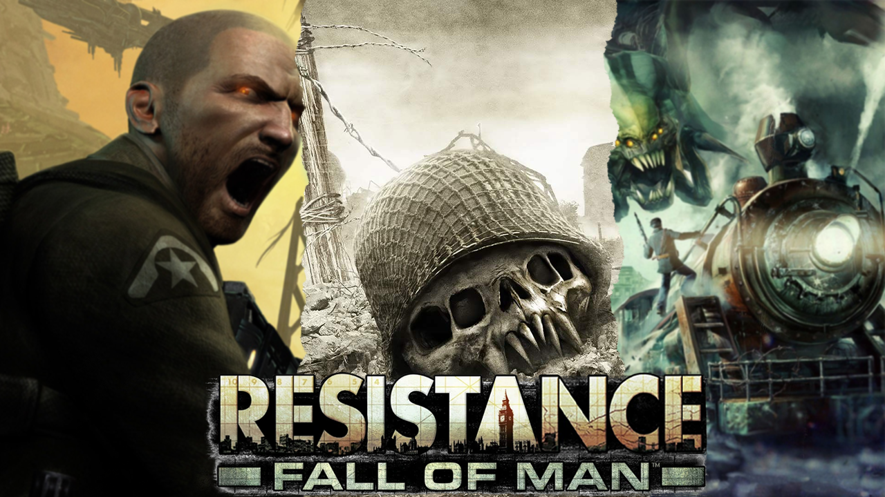
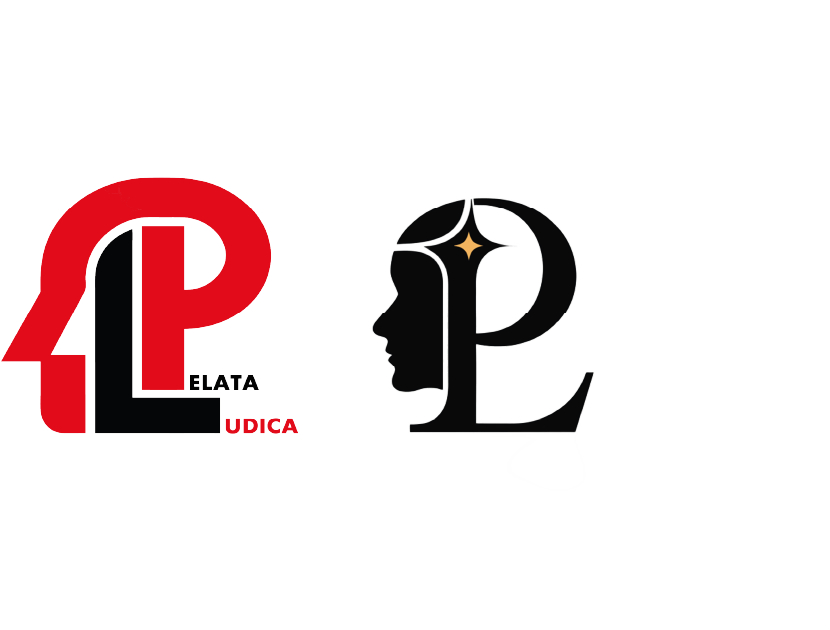
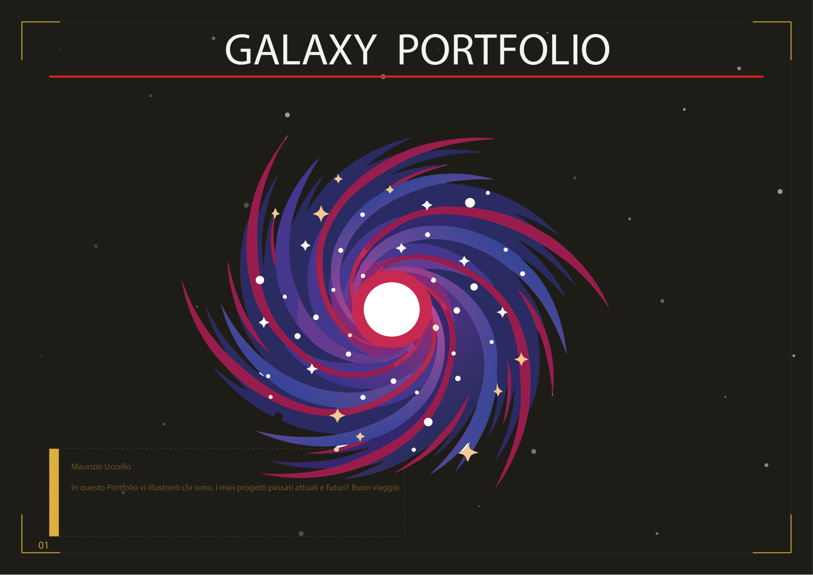
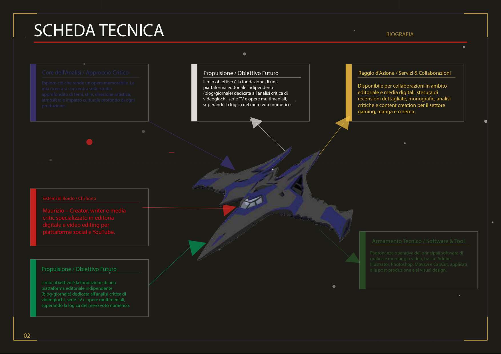
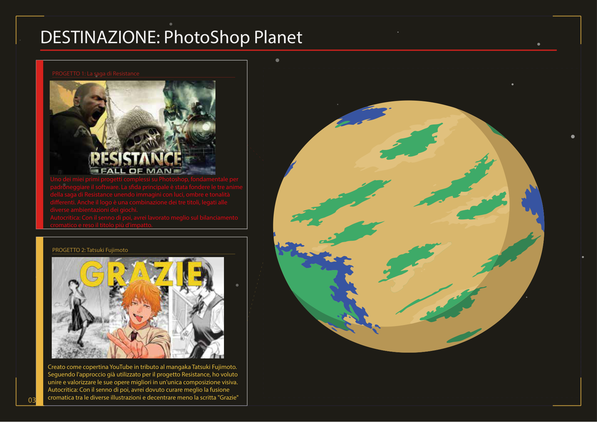
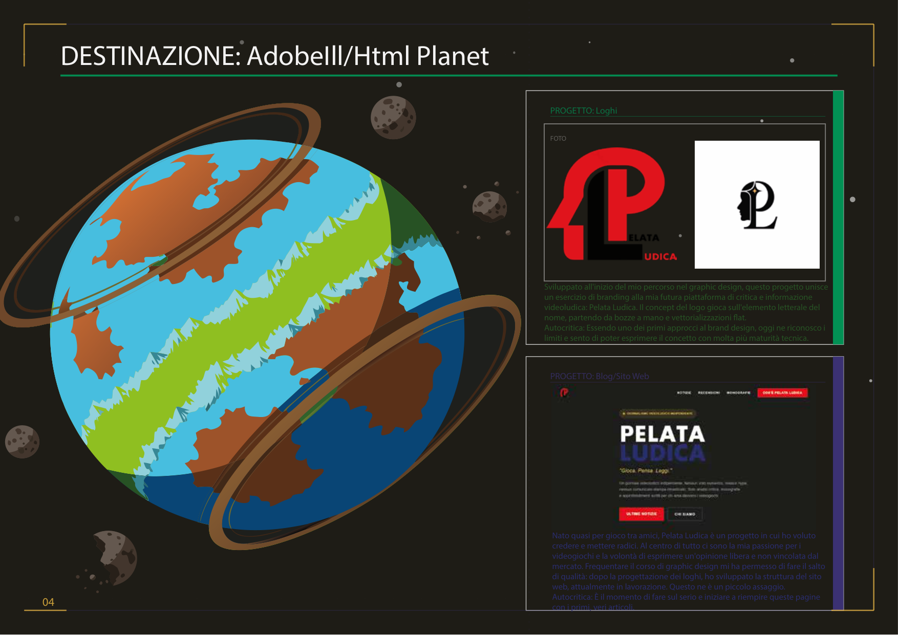
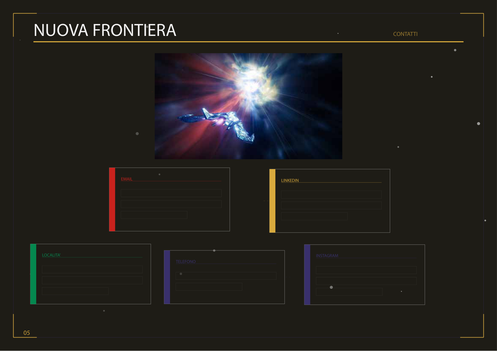

Il mio obiettivo è la fondazione di una piattaforma editoriale indipendente
(blog/giornale) dedicata all'analisi critica di videogiochi, serie TV e opere multimediali, superando la
logica del mero voto numerico.
RAGGIO D'AZIONE
SERVIZI & COLLABORAZIONI
Disponibile per collaborazioni in ambito editoriale e media digitali: stesura di
recensioni dettagliate, monografie, analisi critiche e content creation per il settore gaming, manga e cinema.
ARMAMENTO TECNICO
SOFTWARE & TOOL
Padronanza operativa dei principali software di grafica e montaggio video, tra cui
Adobe Illustrator, Photoshop, Movavi e CapCut, applicati alla post-produzione e al visual design.
CORE DELL'ANALISI
APPROCCIO CRITICO
Esploro ciò che rende un'opera memorabile. La mia ricerca si concentra sullo studio
approfondito di temi, stile, direzione artistica, atmosfera e impatto culturale profondo di ogni produzione.
SISTEMI DI BORDO
CHI SONO
Maurizio – Creator, writer e media critic specializzato in editoria digitale e video
editing per piattaforme social e YouTube.
∅ 240 UM
SCROLL PER PARTIRE
DESTINAZIONE
PhotoShop Planet
LAT: 23.8°NLON: 47.2°W● ORBITA STABILIZZATA
03
PHOTOSHOP
Progetto 1: La Saga di Resistance

FOTO
Uno dei miei primi progetti complessi su Photoshop, fondamentale per padroneggiare il
software. La sfida principale è stata fondere le tre anime della saga di Resistance unendo immagini con
luci, ombre e tonalità differenti. Anche il logo è una combinazione dei tre titoli, legati alle diverse
ambientazioni dei giochi.
Autocritica: Con il senno di poi, avrei lavorato meglio sul bilanciamento
cromatico e reso il titolo più d'impatto
Creato come copertina YouTube in tributo al mangaka Tatsuki Fujimoto. Seguendo
l'approccio già utilizzato per il progetto Resistance, ho voluto unire e valorizzare le sue opere migliori
in un'unica composizione visiva.
Autocritica: Con il senno di poi, avrei dovuto curare meglio la fusione cromatica
tra le diverse illustrazioni e decentrare meno la scritta "Grazie"
03
DESTINAZIONE
AdobeIll & Web Planet
LAT: 51.4°SLON: 12.8°E● ORBITA STABILIZZATA
04
BRAND DESIGN
Progetto 1: Loghi

FOTO
Sviluppato all'inizio del mio percorso nel graphic design, questo progetto unisce un
esercizio di branding alla mia futura piattaforma di critica e informazione videoludica: Pelata Ludica. Il
concept del logo gioca sull'elemento letterale del nome, partendo da bozze a mano e vettorializzazioni flat.
Autocritica: Essendo uno dei primi approcci al brand design, oggi ne riconosco i
limiti e sento di poter esprimere il concetto con molta più maturità tecnica.
Nato quasi per gioco tra amici, Pelata Ludica è un progetto in cui ho voluto credere e mettere radici. Al centro di tutto ci sono la mia passione per i videogiochi e la volontà di esprimere un'opinione libera e non vincolata dal mercato. Frequentare il corso di graphic design mi ha permesso di fare il salto di qualità: dopo la progettazione dei loghi, ho sviluppato la struttura del sito web, attualmente in lavorazione. Questo ne è un piccolo assaggio.
Autocritica: È il momento di fare sul serio e iniziare a riempire queste pagine con i primi, veri articoli.
L’idea di questo sito portfolio è nata quasi spontaneamente. Mentre lavoravo alla versione cartacea/PDF, ho pensato che avrei potuto sfruttare l'occasione per progettarne contemporaneamente una bozza ipotetica per il web. Il tema centrale è lo spazio: un vero e proprio viaggio verso una galassia sconosciuta.
L'esperienza inizia in prima pagina, dove ci si trova davanti alla galassia. Per la biografia ho immaginato una schermata tecnica incentrata sulle caratteristiche della navicella, mentre le sezioni successive rappresentano i singoli pianeti da esplorare. Ogni pianeta corrisponde a un ambito di progetto: il primo è dedicato a Photoshop, il secondo a Illustrator e al Web. Ho disegnato a mano le bozze di questi mondi prima di ricrearli su Illustrator, strutturando i dettagli dei progetti come se fossero le informazioni scientifiche raccolte sul pianeta stesso. Infine, per la pagina dei contatti — dopo aver scartato un'idea iniziale — ho optato per una visuale dall'interno dell'abitacolo, per far sentire l'utente parte integrante del viaggio.
Autocritica: Inizialmente volevo che la navicella si muovesse di pagina in pagina, simulando il viaggio in tempo reale. Ho preferito accantonare l'idea per il momento: nella versione cartacea avrebbe richiesto tecniche di impaginazione che voglio ancora affinare, mentre per il web avrebbe comportato un livello di animazione che devo ancora approfondire.
DOCUMENTO:portfolioavanzatos.pdf
STATO:✓ Anteprima Collegata





PAGINA 1 / 5
ARCHIVI PERSONALI / CERTIFICATI & CV
ATTESTATI & CURRICULUM
Percorso di Studi
RECENTE
Corso di Graphic Design
Studio avanzato di brand identity, visual design, composizione e progettazione vettoriale.
CONTINUATIVO
Visual Design & Content Creation
Composizione fotografica, editing video (Movavi/CapCut) e critica multimediale.
.png)
.png)
.png)
.png)
.png)
.png)